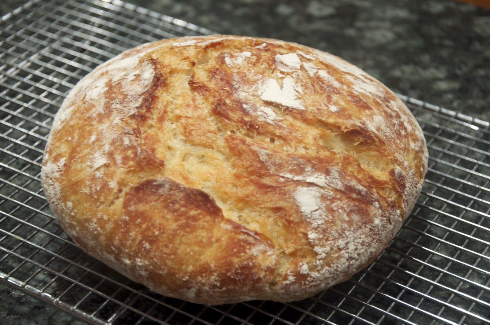

Home Made Bread

A home made bread made with the most basic ingredients.
A good source of carbohydrates.
This recipe is older than civilization itself, it was the food
in witch civilizations like ancient egypt and the ancient mesopotamian
civilizations and many others were built upon to this day.
Ingredients:
- Flour
- Salt
- Olive Oil
- Yeast
Steps:
- Place the flour on a table.
- Dilute the Yeast on water.
- Throw the water in the middle of the flour.
- Throw some olive oil and salt on top.
- Knead the mix until you get a consistent dough.
- Cover the dough and let it rest for two hours.
- Put the dough into the oven and cook it until the bread gets a
browner color like the one in the picture shown above.
- Eat it.